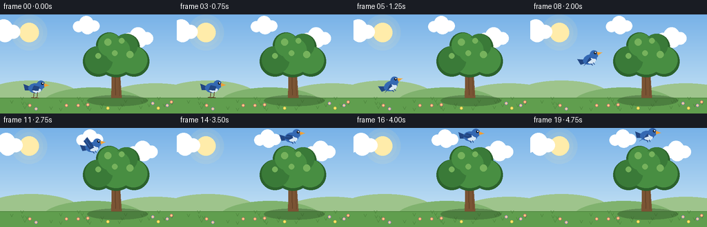
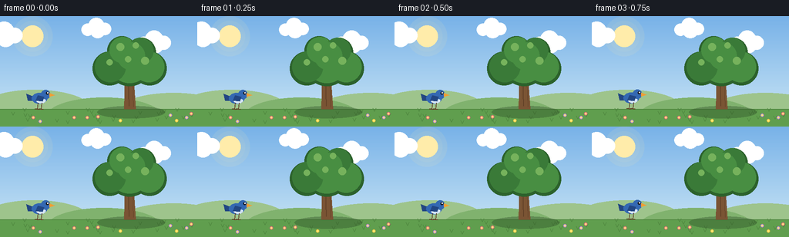

CODING AGENTS AS PIXEL WORLD MODELS
traex/Seed-2.1-Pro-0915 · dynamic_spatial_relationship_0048
点击播放 · 原生 RGB 像素
逐轮保存的候选
回放视频、检查图与代码变化。
每份候选均可单独播放。实际图片检查记录在下方工具轨迹中。
候选 01播放与检查图
点击播放 · 原生 RGB 像素


展开代码变化
--- 上一保存版本
+++ 本次保存版本
@@ -0,0 +1,241 @@
+"""Text-to-video: a bird left of a tree flies to above the tree.
+
+Pure local rendering (numpy + PIL). 20 frames, 256x144, 4 fps.
+The scene is drawn at 2x and downsampled for smoother edges.
+"""
+import math
+from pathlib import Path
+
+import numpy as np
+from PIL import Image, ImageDraw
+
+import artifact_io
+
+W, H, N, FPS = 256, 144, 20, 4.0
+S = 2 # supersampling factor
+
+# ---- palette --------------------------------------------------------------
+SKY_TOP = np.array([120, 178, 232], dtype=np.float32)
+SKY_BOT = np.array([206, 232, 246], dtype=np.float32)
+SUN = (255, 236, 170)
+CLOUD = (255, 255, 255)
+HILL_FAR = (158, 196, 140)
+HILL_NEAR = (128, 178, 110)
+GROUND = (96, 158, 78)
+GROUND_DARK = (78, 134, 62)
+TRUNK = (122, 84, 52)
+TRUNK_DARK = (96, 64, 38)
+LEAF_A = (72, 142, 66)
+LEAF_B = (58, 122, 56)
+LEAF_DARK = (44, 98, 44)
+LEAF_LIGHT = (118, 178, 92)
+BIRD_BLUE = (52, 104, 178)
+BIRD_DARK = (34, 70, 130)
+BIRD_BELLY = (214, 230, 244)
+BEAK = (240, 158, 52)
+LEG = (96, 64, 38)
+
+# scene anchors (final-resolution coordinates)
+GROUND_Y = 121
+TREE_X = 168
+PERCH_X, PERCH_Y = 52, 107 # body center while standing on the ground
+TARGET_X, TARGET_Y = 170, 12 # body center when above the canopy
+
+
+def smoothstep(t):
+ return t * t * (3 - 2 * t)
+
+
+def make_sky():
+ ramp = np.linspace(0, 1, H * S, dtype=np.float32)[:, None]
+ grad = SKY_TOP * (1 - ramp) + SKY_BOT * ramp
+ sky = np.repeat(grad[:, None, :], W * S, axis=1)
+ return Image.fromarray(np.broadcast_to(
+ sky, (H * S, W * S, 3)).astype(np.uint8).copy())
+
+
+def draw_cloud(draw, x, y, scale, alpha=235):
+ color = CLOUD + (alpha,)
+ for dx, dy, r in [(-14, 2, 10), (0, -4, 13), (14, 1, 10), (2, 4, 12)]:
+ draw.ellipse([(x + dx * scale - r * scale) * S,
+ (y + dy * scale - r * scale) * S,
+ (x + dx * scale + r * scale) * S,
+ (y + dy * scale + r * scale) * S], fill=color)
+
+
+def draw_tree(draw, img):
+ # soft shadow on the ground
+ shadow = Image.new("RGBA", img.size, (0, 0, 0, 0))
+ sd = ImageDraw.Draw(shadow)
+ sd.ellipse([(TREE_X - 42) * S, (GROUND_Y - 4) * S,
+ (TREE_X + 46) * S, (GROUND_Y + 12) * S], fill=(40, 70, 35, 90))
+ img.alpha_composite(shadow)
+
+ # trunk: gently tapered polygon with a branch stub
+ bx = TREE_X
+ trunk = [((bx - 7), GROUND_Y), ((bx + 8), GROUND_Y),
+ ((bx + 5), 78), ((bx + 11), 70),
+ ((bx + 15), 62), ((bx + 11), 60),
+ ((bx + 6), 68), ((bx - 4), 74), ((bx - 6), 80)]
+ draw.polygon([(x * S, y * S) for x, y in trunk], fill=TRUNK)
+ draw.line([(bx - 2) * S, 82 * S, (bx - 1) * S, (GROUND_Y - 4) * S],
+ fill=TRUNK_DARK, width=S)
+ draw.line([(bx + 4) * S, 86 * S, (bx + 5) * S, (GROUND_Y - 3) * S],
+ fill=TRUNK_DARK, width=max(1, S - 1))
+
+ # canopy: layered clusters, dark under-layer first
+ clusters = [
+ (bx, 62, 29, LEAF_DARK), (bx - 26, 68, 22, LEAF_DARK),
+ (bx + 26, 68, 22, LEAF_DARK), (bx - 10, 45, 19, LEAF_DARK),
+ (bx + 15, 47, 19, LEAF_DARK),
+ (bx, 60, 27, LEAF_A), (bx - 25, 66, 20, LEAF_B),
+ (bx + 25, 66, 20, LEAF_A), (bx - 9, 44, 17, LEAF_A),
+ (bx + 14, 45, 17, LEAF_B), (bx + 2, 52, 18, LEAF_A),
+ ]
+ for cx, cy, r, color in clusters:
+ draw.ellipse([(cx - r) * S, (cy - r) * S,
+ (cx + r) * S, (cy + r) * S], fill=color)
+ # sun-side highlights
+ for cx, cy, r in [(bx - 12, 40, 5), (bx + 8, 38, 4), (bx - 26, 60, 4),
+ (bx + 20, 58, 5), (bx - 2, 56, 4)]:
+ draw.ellipse([(cx - r) * S, (cy - r) * S,
+ (cx + r) * S, (cy + r) * S], fill=LEAF_LIGHT)
+
+
+def draw_bird(flap, folded, bank_deg):
+ """Draw a right-facing bird on a small RGBA layer; returns PIL image."""
+ layer = Image.new("RGBA", (46 * S, 40 * S), (0, 0, 0, 0))
+ d = ImageDraw.Draw(layer)
+ ox, oy = 22 * S, 20 * S # local origin (body center)
+
+ def P(x, y):
+ return (ox + x * S, oy + y * S)
+
+ def ellipse(cx, cy, rx, ry, color):
+ d.ellipse([ox + (cx - rx) * S, oy + (cy - ry) * S,
+ ox + (cx + rx) * S, oy + (cy + ry) * S], fill=color)
+
+ # tail
+ d.polygon([P(-7, -2), P(-17, -6), P(-15, 3), P(-7, 3)], fill=BIRD_DARK)
+ # body + belly
+ ellipse(0, 0, 10, 7, BIRD_BLUE)
+ ellipse(2, 3, 6, 3.6, BIRD_BELLY)
+ # head, beak, eye
+ ellipse(8, -5, 6, 6, BIRD_BLUE)
+ d.polygon([P(13, -7), P(20, -4), P(13, -2)], fill=BEAK)
+ ellipse(10.5, -6.5, 1.7, 1.7, (24, 30, 40))
+ ellipse(11, -7, 0.7, 0.7, (255, 255, 255))
+
+ if folded:
+ # resting wing tucked against the body
+ d.polygon([P(-2, -4), P(6, -2), P(4, 4), P(-5, 3)], fill=BIRD_DARK)
+ # legs + toes
+ for lx in (-2, 3):
+ d.line([P(lx, 6), P(lx - 1, 14)], fill=LEG, width=S)
+ d.line([P(lx - 1, 14), P(lx - 4, 14)], fill=LEG, width=S)
+ d.line([P(lx - 1, 14), P(lx + 2, 14)], fill=LEG, width=S)
+ else:
+ # spread flapping wing: shoulder fixed, tip driven by flap (-1..1)
+ tip_x, tip_y = -5, -5 - flap * 11
+ d.polygon([P(1, -3), P(tip_x, tip_y), P(tip_x - 6, tip_y + 5),
+ P(-4, 3), P(2, 1)], fill=BIRD_DARK)
+ d.line([P(-3, -1), P(tip_x - 3, tip_y + 3)],
+ fill=BIRD_BLUE, width=S)
+ # tucked feet
+ d.line([P(-1, 6), P(1, 9)], fill=BIRD_DARK, width=S)
+ d.line([P(3, 6), P(4, 9)], fill=BIRD_DARK, width=S)
+
+ if bank_deg:
+ layer = layer.rotate(bank_deg, resample=Image.BICUBIC, expand=True)
+ return layer
+
+
+def main():
+ case_dir = Path(__file__).parent
+ frames = []
+
+ # static-ish decor positions
+ rng = np.random.default_rng(7)
+ tufts = [(int(rng.integers(4, W - 4)), int(rng.integers(GROUND_Y + 3, H - 3)))
+ for _ in range(26)]
+ flowers = [(int(rng.integers(6, W - 6)), int(rng.integers(GROUND_Y + 6, H - 6)),
+ tuple(int(c) for c in rng.choice([(238, 110, 130), (240, 200, 70),
+ (190, 130, 220)])))
+ for _ in range(10)]
+ clouds = [(30, 24, 1.0), (150, 16, 0.8), (225, 34, 0.9)]
+
+ for f in range(N):
+ img = make_sky().convert("RGBA")
+ draw = ImageDraw.Draw(img)
+
+ # sun with soft glow
+ glow = Image.new("RGBA", img.size, (0, 0, 0, 0))
+ gd = ImageDraw.Draw(glow)
+ for r, a in [(26, 26), (20, 40), (14, 255)]:
+ gd.ellipse([(42 - r) * S, (26 - r) * S,
+ (42 + r) * S, (26 + r) * S], fill=SUN + (a,))
+ img.alpha_composite(glow)
+
+ # drifting clouds
+ for i, (cx, cy, sc) in enumerate(clouds):
+ x = (cx + f * (0.35 + i * 0.12)) % (W + 50) - 25
+ draw_cloud(draw, x, cy, sc)
+
+ # rolling hills
+ draw.ellipse([(-30) * S, 96 * S, 120 * S, 150 * S], fill=HILL_FAR)
+ draw.ellipse([150 * S, 100 * S, 300 * S, 152 * S], fill=HILL_FAR)
+ draw.ellipse([60 * S, 106 * S, 210 * S, 156 * S], fill=HILL_NEAR)
+
+ # ground
+ draw.rectangle([0, GROUND_Y * S, W * S, H * S], fill=GROUND)
+ draw.line([0, GROUND_Y * S, W * S, GROUND_Y * S],
+ fill=GROUND_DARK, width=S)
+ for tx, ty in tufts:
+ draw.line([tx * S, ty * S, (tx - 2) * S, (ty - 4) * S],
+ fill=GROUND_DARK, width=S)
+ draw.line([tx * S, ty * S, (tx + 2) * S, (ty - 4) * S],
+ fill=GROUND_DARK, width=S)
+ for fx, fy, col in flowers:
+ draw.ellipse([(fx - 2) * S, (fy - 2) * S,
+ (fx + 2) * S, (fy + 2) * S], fill=col)
+ draw.ellipse([(fx - 1) * S, (fy - 1) * S,
+ (fx + 1) * S, (fy + 1) * S], fill=(250, 236, 120))
+
+ draw_tree(draw, img)
+
+ # ---- bird trajectory -------------------------------------------------
+ if f <= 3: # perched, left of the tree
+ bx, by = PERCH_X, PERCH_Y + math.sin(f * 1.1) * 0.5
+ flap, folded, bank = 0.0, True, 0.0
+ elif f >= 16: # hovering above the tree
+ bx = TARGET_X
+ by = TARGET_Y + math.sin((f - 16) * 1.3) * 2.0
+ flap = math.sin((f - 16) * 1.7) * 0.8
+ folded, bank = False, 0.0
+ else: # flight arc, frames 4..15
+ t = smoothstep((f - 4) / 11)
+ bx = PERCH_X + (TARGET_X - PERCH_X) * t
+ base_y = PERCH_Y + (TARGET_Y - PERCH_Y) * t
+ by = base_y - 16 * math.sin(math.pi * t)
+ flap = math.sin(2 * math.pi * 0.9 * (f - 4))
+ folded = False
+ # bank into the climb / descent
+ dy = ((TARGET_Y - PERCH_Y) - 16 * math.pi *
+ math.cos(math.pi * t)) / 11
+ bank = max(-28, min(28, -dy * 1.6))
+
+ bird = draw_bird(flap, folded, bank)
+ bw, bh = bird.size
+ img.alpha_composite(bird,
+ (int(bx * S - bw / 2), int(by * S - bh / 2)))
+
+ frame = img.convert("RGB").resize((W, H), Image.LANCZOS)
+ frames.append(np.asarray(frame, dtype=np.uint8))
+
+ frames = np.stack(frames, axis=0)
+ artifact_io.save(frames, case_dir)
+ print(f"saved {frames.shape} frames to {case_dir}")
+
+
+if __name__ == "__main__":
+ main()
可观测工具轨迹
实际执行的命令与返回图片。
命令 1exit 0
/bin/bash -lc 'cat prompt.txt; echo "====RULES===="; cat GENERATION_RULES.md; echo "====SPEC===="; cat task_spec.json; ls -la'
命令 2exit 0
/bin/bash -lc 'cat artifact_io.py'
命令 3exit 0
/bin/bash -lc 'cd "$(pwd)" && python generate.py && ls -la frames | head -8 && ls -la pixels.npz inspection.png index.html'
保存候选 1 份；完成命令 3 次；可验证图片返回 0 张。原始 API 响应与完整日志保留在本地。